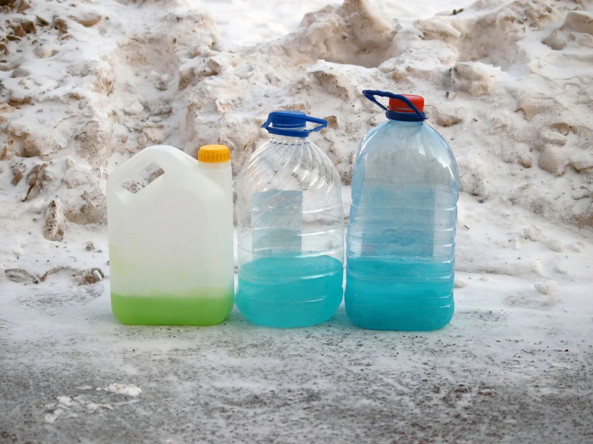
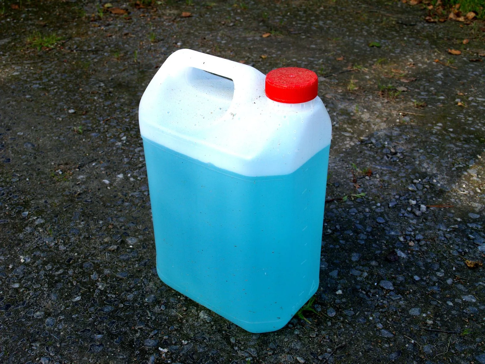
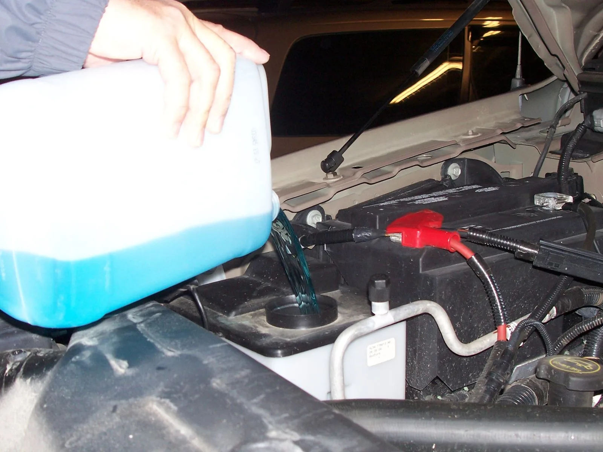
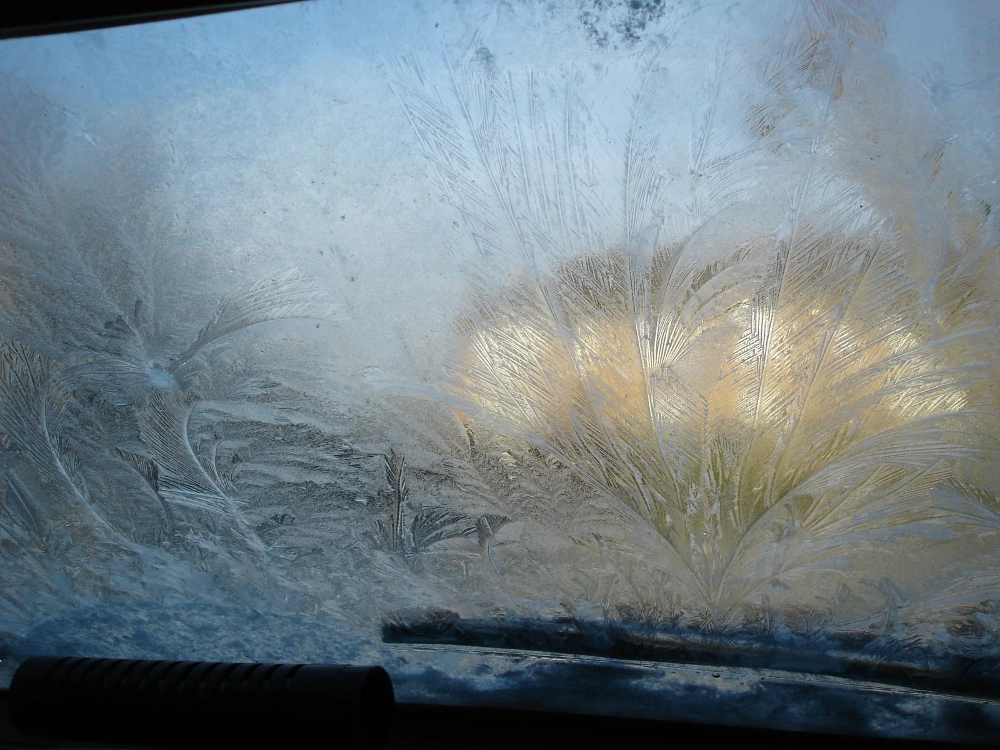

▲ 여름용 워셔액을 겨울에도 그대로 쓰면 액체 자체가 얼어붙는다 ⓒ Staselnik / Wikimedia Commons (CC BY-SA 3.0)
겨울철 차량 관리라고 하면 대부분 부동액(엔진 냉각수)부터 떠올린다. 하지만 냉각수와는 완전히 별개인 액체, 워셔액(와이퍼 세정액)도 겨울철에 얼어서 탱크와 모터가 파손되는 사고가 흔하다.
워셔액과 부동액(냉각수)은 성분과 역할이 전혀 다르다. 부동액은 엔진 열을 식히는 냉각시스템 순환액이고, 워셔액은 앞유리에 뿌려 시야를 확보하는 세정액이다. 보관 위치도 다르다 — 부동액은 라디에이터 쪽 냉각수 리저버에, 워셔액은 보닛을 열면 보이는 파란색 뚜껑의 별도 탱크에 들어간다. 이 글은 부동액이 아니라 워셔액 자체의 동파만 다룬다.
1. 워셔액 동파, 부동액과는 왜 다른 문제인가
부동액은 원래부터 부동 성분(에틸렌글리콜 등)이 기본 함량으로 들어가 있어 웬만한 겨울 추위에는 얼지 않는다. 반면 워셔액은 계절용 제품 구분이 있다는 사실 자체를 모르고 그냥 사계절 방치하는 경우가 많아 오히려 동파 빈도가 잦다.
| 구분 | 부동액(냉각수) | 워셔액 |
|---|---|---|
| 역할 | 엔진 열을 식히는 냉각시스템 순환액 | 앞유리에 뿌려 이물질을 제거하는 세정액 |
| 보관 위치 | 라디에이터 옆 냉각수 리저버 | 보닛 내 별도 워셔액 탱크(파란 뚜껑) |
| 기본 부동 성능 | 제품 자체에 내장 — 웬만해선 안 얼음 | 여름용은 부동 성능이 약함 — 계절에 맞게 교체 필요 |
| 동파 시 피해 | 냉각계통 파손, 엔진 과열 | 워셔액 탱크·펌프(모터)·노즐 파손 |
📍 이 글은 워셔액만 다룬다
부동액(냉각수)의 색상별 의미나 교체 주기는 별도로 다룬 적이 있다. 이 글에서 말하는 "부동 워셔액"은 냉각수와 무관하며, 순수하게 와이퍼 세정액 자체의 겨울용 제품을 가리킨다.
2. 여름용 워셔액을 겨울에 그대로 쓰면 왜 얼어붙나
워셔액의 주성분은 물과 알코올(주로 에탄올) 혼합액이다. 여름용은 세정력 위주로 배합해 물 비중이 높고 알코올 비중이 낮다 — 물 비중이 높을수록 어는점이 0℃에 가까워진다.
겨울용(부동 워셔액)은 반대로 알코올 비중을 끌어올려 어는점을 -20℃, -30℃ 수준까지 낮춘 제품이다. 제품 라벨에 동결 방지 온도가 표기돼 있는 경우가 많으므로, 구매 전 반드시 확인해야 한다.

▲ 겨울철에는 라벨에 동결 방지 온도가 표기된 겨울용(부동) 워셔액을 골라야 한다 ⓒ Santeri Viinamäki / Wikimedia Commons (CC BY-SA 4.0)
✅ 동파로 이어지는 진행 순서
① 여름용(물 비중 높은) 워셔액이 탱크에 남아있는 채로 기온이 영하로 급락
② 탱크 안 워셔액이 서서히 얼어 얼음 결정 형태로 굳음
③ 워셔 스위치를 눌러도 노즐이 막혀 분사가 안 됨
④ 그런데도 계속 스위치를 누르면 워셔 펌프(모터)가 빈 부하로 공회전하며 소손
⑤ 얼음이 부피 팽창하면서 플라스틱 탱크 자체에 균열이 생기는 경우도 있음
물은 얼음으로 변할 때 부피가 약 9% 늘어난다. 밀폐된 플라스틱 탱크 안에서 이 팽창압을 견디지 못하면 균열이 생기고, 심한 경우 탱크가 아예 터지기도 한다. 탱크 교체는 부품값 자체보다 범퍼나 휠하우스를 뜯어내야 하는 공임이 더 드는 경우가 많고, 여기에 펌프 모터·호스·노즐까지 함께 손상되면 수리비가 30만~50만 원대까지 올라가는 사례도 보고된다. 즉 동파는 단순히 "물 안 나온다" 수준의 문제가 아니라, 워셔 모터 교체와 탱크 교체까지 갈 수 있는 정비 비용 문제로 번질 수 있다.
3. 겨울용으로 언제, 어떻게 바꿔야 하나
가장 확실한 기준은 계절이 바뀌는 시점이다. 국내 판매 제품 다수는 최근 계절 구분 없이 사계절용으로 나오지만, 여전히 여름/겨울 전용 제품이 별도로 판매되고 있어 구매 시 라벨의 동결 방지 온도 표기를 확인하는 습관이 중요하다.
다만 "사계절용"이라는 표기만 믿고 안심하면 안 된다. 같은 사계절용이라도 제품 등급에 따라 보증하는 동결 방지 온도가 크게 다르다 — 저가형은 영하 5~10℃ 선까지만 버티는 반면, 극저온용·프리미엄 제품은 영하 25℃ 이하까지 표기된 경우도 있다. 한파가 잦은 지역이나 영하 10℃ 밑으로 떨어지는 밤이 많은 지역이라면, "사계절용"보다 라벨에 적힌 실제 동결 방지 온도 수치를 확인하는 편이 안전하다.
| 시점 | 해야 할 일 |
|---|---|
| 가을(기온이 영상 한 자릿수로 내려갈 때) | 탱크에 남은 여름용 워셔액을 다 쓰거나 겨울용으로 교체 |
| 본격 한파 전 | 제품 라벨의 동결 방지 온도가 지역 최저기온보다 낮은지 확인 |
| 3~6개월 주기 | 탱크 내 워셔액 상태(변색·부유물) 점검, 필요 시 교체 |
| 영하권 아침 | 워셔 스위치를 누르기 전 눈으로 노즐 결빙 여부 확인 |
📍 원액이면 물과 섞어 쓴다
일부 워셔액은 원액(농축) 제품으로 판매돼 물과 희석해서 넣어야 한다. 이 경우 겨울철에는 물 희석 비율을 낮추거나(원액 비중을 높이거나) 아예 원액을 그대로 사용해야 어는점이 낮게 유지된다. 제품 설명서의 계절별 희석 비율을 따르는 것이 안전하다.
4. 직접 교체하는 방법
워셔액 교체는 보닛만 열 수 있으면 누구나 할 수 있는 간단한 작업이다.
✅ 워셔액 직접 교체·보충 순서
① 시동을 끈 뒤 보닛을 열고 파란색 뚜껑의 워셔액 주입구를 찾는다(차종마다 위치는 다르지만 대개 좌우측 상단)
② 뚜껑을 열고 깔때기를 이용해 새 워셔액(겨울용)을 천천히 붓는다
③ 원액 제품이면 겨울철 권장 비율대로 물과 섞는다(또는 원액 그대로 사용)
④ 탱크 용량을 넘기지 않도록 주입구 표시선까지만 채운다
⑤ 뚜껑을 닫고 워셔 스위치를 몇 번 눌러 분사가 정상적으로 되는지 확인 후 보닛을 닫는다

▲ 워셔액 주입은 보닛만 열 수 있으면 누구나 할 수 있는 간단한 작업이다 ⓒ Hamedog / Wikimedia Commons (CC BY-SA 3.0)
차종별 워셔액 주입구 위치와 셀프 교체 방법은 제조사 공식 안내에서도 확인할 수 있다. KG모빌리티 셀프 교체 안내 보기
📍 이미 얼어버렸다면 억지로 뿌리지 말 것
워셔 스위치를 눌러도 반응이 없다면 이미 얼었을 가능성이 크다. 이 상태에서 계속 스위치를 누르면 펌프(모터)에 무리가 간다. 실내 주차 등으로 차량을 데워 자연 해동시킨 뒤 겨울용 워셔액으로 교체하는 것이 안전하다.
5. 워셔액 부족 경고등이 뜨면
계기판에 노란색 분수 모양 경고등이 뜨면 워셔액 잔량이 일정 수준 이하로 떨어졌다는 신호다. 이 경고등은 동결 여부를 감지하는 기능이 아니라 단순 잔량 센서이므로, 얼어서 안 나오는 상황에서는 뜨지 않을 수도 있다는 점을 알아둬야 한다.

▲ 서리·결빙이 심한 아침에는 워셔 스위치를 누르기 전 노즐 상태를 먼저 눈으로 확인하는 것이 안전하다 ⓒ Jayen466 / Wikimedia Commons (Public Domain)
✅ 경고등이 떴을 때 확인할 것
· 잔량 부족이면 즉시 보충 — 겨울철에는 반드시 겨울용(부동) 제품으로
· 보충했는데도 경고등이 안 꺼지면 레벨 센서 결함일 수 있어 정비소 점검 필요
· 장거리 출발 전에는 경고등 여부와 무관하게 워셔 스위치를 눌러 분사를 직접 확인
· 시야 확보용 필수 소모품이므로 완전히 바닥나기 전 여유 있게 보충
6. 요약
워셔액은 부동액(엔진 냉각수)과 전혀 다른 액체로, 겨울철 별도의 동파 위험이 있다. 여름용 워셔액은 물 비중이 높아 영하권에서 얼어붙기 쉽고, 이 상태로 워셔 스위치를 계속 누르면 펌프 소손·탱크 균열로 이어질 수 있다.
가을철 기온이 떨어지기 시작할 때 겨울용(부동) 워셔액으로 교체하고, 원액 제품은 겨울철 희석 비율을 따르는 것이 핵심이다. 교체 자체는 보닛을 열고 주입구에 붓기만 하면 되는 간단한 작업이며, 워셔액 부족 경고등은 동결 여부와 무관한 단순 잔량 신호라는 점도 기억해야 한다.